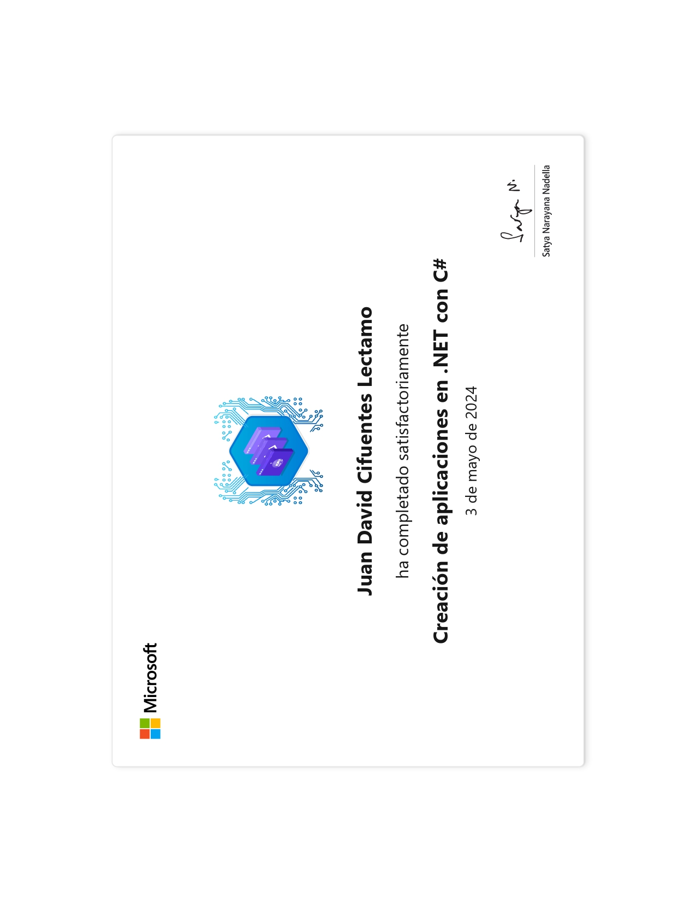

Creación de aplicaciones en .NET con C# - For Microsoft
Completado en mayo del 2024. Este curso sobre Creación de aplicaciones en .NET con C# ha sido una excelente oportunidad para profundizar en el desarrollo de aplicaciones utilizando el framework .NET y el lenguaje de programación C#. Durante este proceso, se aprendió a crear aplicaciones complejas y escalables, abarcando desde el desarrollo de interfaces gráficas hasta la implementación básica de la lógica de negocios. El uso de C# como lenguaje permite aprovechar sus potentes características orientadas a objetos y su integración fluida con las bibliotecas del ecosistema .NET, con enfoques prácticos y teóricos, cubriendo:
- Introducción a .NET Framework y .NET Core.
- Conceptos fundamentales de C# y programación orientada a objetos.
- Desarrollo de aplicaciones web con ASP.NET Core.
- Consumo de APIs REST y servicios web.
- Uso de Entity Framework para acceso a bases de datos.
- Buenas prácticas y patrones de diseño.
Con este curso, desarrollé habilidades necesarias para implementar la lógica y crear aplicaciones complejas, escalables y mantenibles en ambientes Microsoft.
Certificado Obtenido
